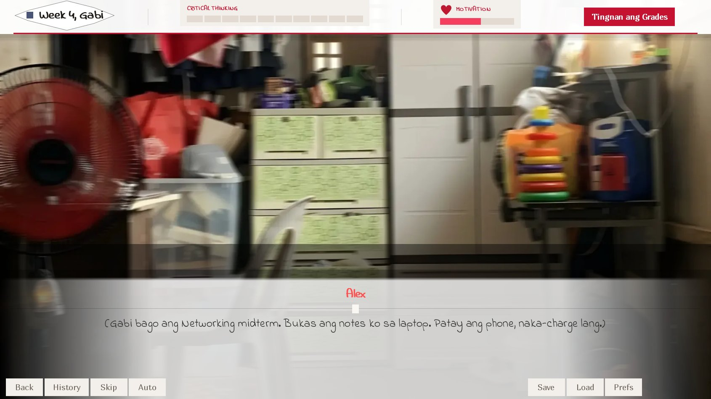
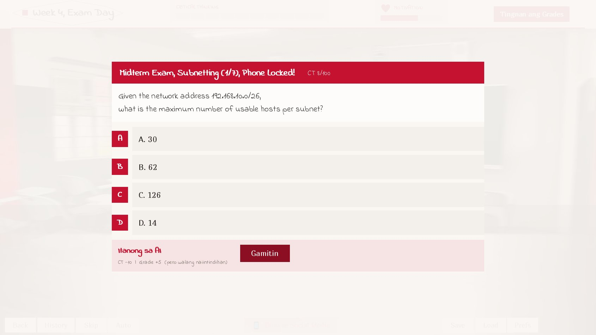
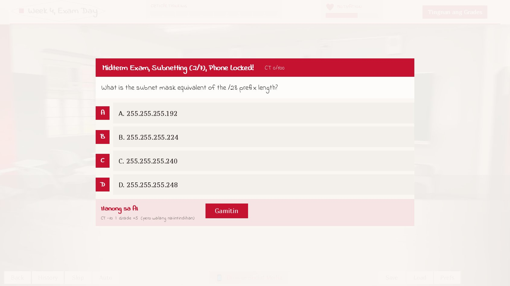
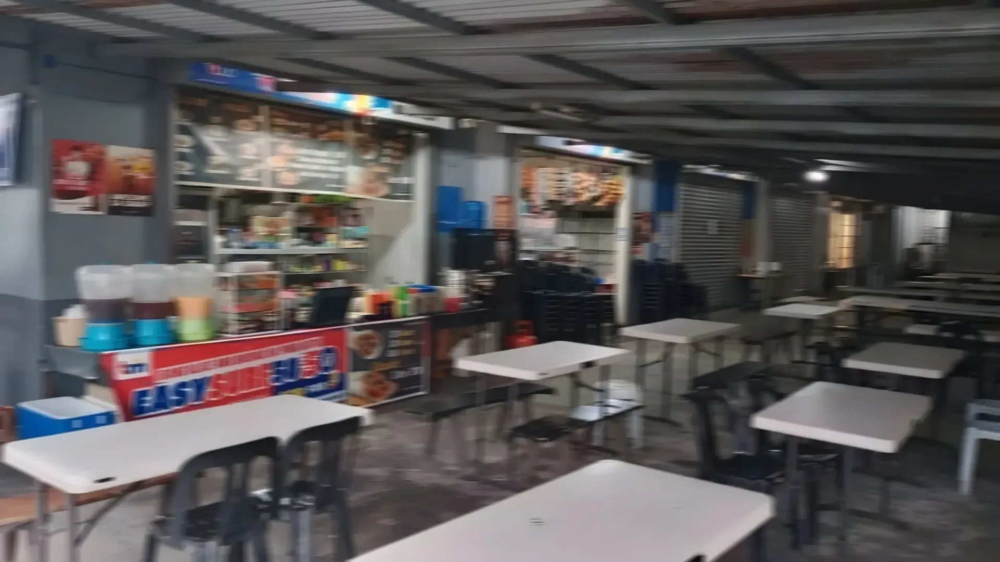
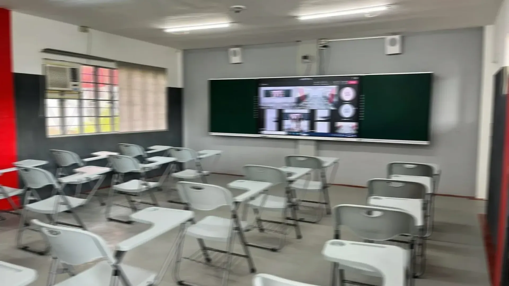
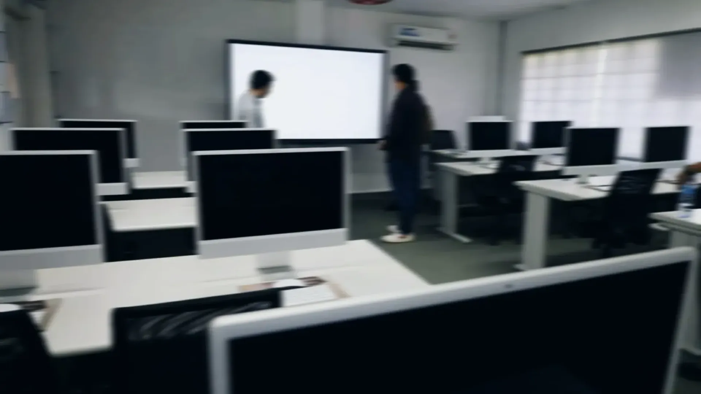
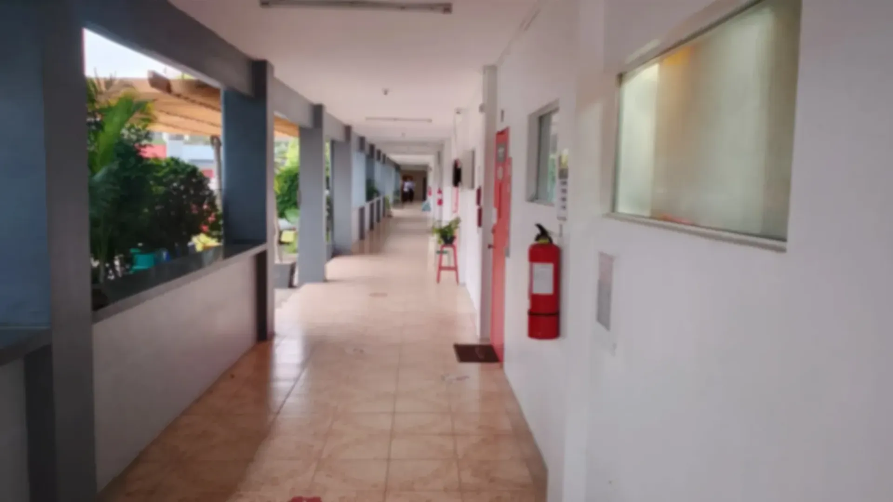

Every shortcut
works. That's
the problem.
A Filipino-English language visual novel about eight weeks in the life of a college student, and the AI that's always one tab away, ready to answer for you.
The Premise
You play Alex. Or Alexa.
Either way, you decide.
A third-year BSIT student, across eight weeks of the semester, choosing, again and again, how much to lean on AI versus how much to actually think a problem through. Networ[...]
What changes is what you're left with.
"Lean on AI enough times and you pass the semester with a Critical Thinking score you can't get back by finals week, no matter how many correct answers you r[...]

How It Works
Everything you do is tracked. All the way to finals.
- Day / time indicator
- Amber for daytime, navy for night, maroon for exam and submission days.
- Critical Thinking
- 0–100, ten segments. Drops when you lean on AI, rises when you put the effort in yourself.
- Motivation
- 0–100. Drops with failure or shame, rises with wins, however small.
- Grades
- Your standing in all three subjects, open to check at any time.
Fig. 2. The HUD, this quietly scrolls with the page, the same way it tracks you through the game.
Every graded moment is a fork.
Some weeks play out as timed multiple-choice minigames, VLAN configs, Python debugging, subnetting, RA 10175 scenarios, pulled from real coursework, not invented trivia.[...]
Slower. Riskier, you can get it wrong. But it's the only path that grows Critical Thinking instead of spending it.
Instant. Boosts the subject grade, drops Critical Thinking, and adds to a running AI-use count the game remembers until the very end.
The Cast
Three subjects. Three professors. One you.
Fall under 60 in any subject by finals, and it's marked INC, incomplete.
| Professor | Subject | What's on the line |
|---|---|---|
| Mr. Earns | Networking | Routing protocols, VLAN configuration, subnetting under a clock. |
| Mr. Kai | Programming | Python functions and debugging, code you have to be able to explain, not just submit. |
| Ms. Iva | Cybersecurity | RA 10173 / RA 10175, and citations that have to trace back to something real. |
From the Build
What it actually looks like



Endings
Your final Critical Thinking, Motivation, and AI-use count decide where you land.
| Ending | Roughly what it takes |
|---|---|
| Caught | Ms. Iva catches a hallucinated citation, an instant, separate ending, regardless of anything else. |
| Special Good | All three grades ≥85, zero AI uses, Critical Thinking ≥75, did it entirely on your own, and did it well. |
| Good (Guilt) | You passed everything, but leaned on AI more than 3 times and Critical Thinking fell below 55. |
| Good (Solid) | You passed everything without tripping the guilt or special-good conditions. |
| Redemption | At least one INC, but Critical Thinking and Motivation both held at ≥45, down, but not out. |
| Bad | An INC, and Critical Thinking or Motivation fell below 45. |
Table 1. Your final stats are shown to you at the end regardless of which ending you land on.
Where It Happens
Eight weeks, one campus

Classroom
Computer Lab
HallwayThe Humorous Irony of this project.
A student used AI to help build a game about AI dependence. Isn't that the exact contradiction?
No, and the distinction is the same one the game is trying to teach. The in-game penalty for using AI doesn't fire because AI was used. It fires when AI use replaces under[...]
Every fix across this project's build log started with "here's the root cause" before a single line changed. That's the difference between using a tool to move faster and [...]
AI is not supposed to be a crutch, or cheat code, or something that replaces critical thinking. But every change must be embraced, in order not to be crushe[...]
"Kailan nagiging crutch ang isang tool?"
FAQ
Before you play
Mostly Taglish, a natural mix of Tagalog and English, the way most Filipino college students actually talk. If you understand casual Filipino conversation, you'll fo[...]
No prior knowledge needed to play through the story, but every question is pulled from real coursework (networking, Python, cybersecurity law), not invented trivia, [...]
Not directly, every choice keeps the story moving. But your AI-use count is remembered for the entire eight weeks, and it's one of the values that decides which of t[...]
Free, and it runs in your browser, no download. Built in Ren'Py and exported to WebAssembly.
Roughly 60–90 minutes for one ending, start to finish. Six endings means it's worth a second look.
Eight weeks. One semester.
Do you know how much you actually lean on it?
Free, plays in any browser, no download required.